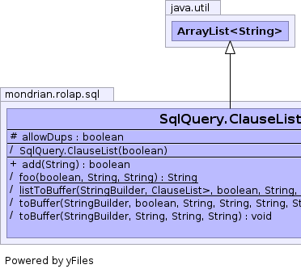
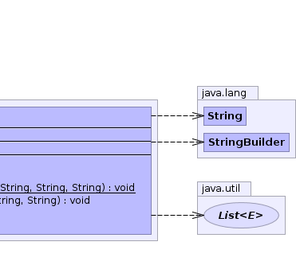

static class SqlQuery.ClauseList extends ArrayList<String>
 |
 |
| Modifier and Type | Field and Description |
|---|---|
protected boolean |
allowDups |
modCount| Constructor and Description |
|---|
SqlQuery.ClauseList(boolean allowDups) |
| Modifier and Type | Method and Description |
|---|---|
boolean |
add(String element)
Adds an element to this ClauseList if either duplicates are allowed
or if it has not already been added.
|
(package private) static String |
foo(boolean generateFormattedSql,
String prefix,
String s) |
(package private) static void |
listToBuffer(StringBuilder buf,
List<SqlQuery.ClauseList> clauseListList,
boolean generateFormattedSql,
String prefix,
String first,
String sep,
String last) |
(package private) void |
toBuffer(StringBuilder buf,
boolean generateFormattedSql,
String prefix,
String first,
String sep,
String last,
String empty) |
(package private) void |
toBuffer(StringBuilder buf,
String first,
String sep,
String last) |
add, addAll, addAll, clear, clone, contains, ensureCapacity, get, indexOf, isEmpty, iterator, lastIndexOf, listIterator, listIterator, remove, remove, removeAll, removeRange, retainAll, set, size, subList, toArray, toArray, trimToSizeequals, hashCodecontainsAll, toStringfinalize, getClass, notify, notifyAll, wait, wait, waitcontainsAll, equals, hashCodeprotected final boolean allowDups
SqlQuery.ClauseList(boolean allowDups)
public boolean add(String element)
add in interface Collection<String>add in interface List<String>add in class ArrayList<String>element - Element to addCollection.add(Object)final void toBuffer(StringBuilder buf, boolean generateFormattedSql, String prefix, String first, String sep, String last, String empty)
final void toBuffer(StringBuilder buf, String first, String sep, String last)
static void listToBuffer(StringBuilder buf, List<SqlQuery.ClauseList> clauseListList, boolean generateFormattedSql, String prefix, String first, String sep, String last)